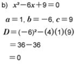

Determine cuántas soluciones en los números reales tienen las siguientes ecuaciones de segundo grado
a) x² + 4x -1 = 0
b) x² + 4x + 4 = 0
c) x² + 4x + 5 = 0
Se sustituyen en la fórmula general los valores respectivos de a, b y c de cada una de las ecuaciones anteriores:
La ecuación dada tiene dos soluciones diferentes en los números reales: -2 + √5 y -2 - √5
La ecuación tiene una solución en los números reales: -2.
La ecuación no tiene solución en los números reales por que √-4 no es un numero real.
En conclusión, las ecuaciones de segundo grado pueden tener dos soluciones reales distintas, una solución real o ninguna solución en los números reales.
El hecho de que la ecuación ax² + bx + c = 0 tenga dos soluciones distintas, una única solución o ninguna solución real depende de la cantidad. D = b² - 4ac, llamada discriminante, que aparece en el radical de la fórmula general.
1. Si D es positivo, la ecuación de segundo grado tiene dos soluciones distintas en los números reales.
2. Si D = 0, la ecuación de segundo grado tiene una solución en los números reales.
3. Si D es negativo, la ecuación de segundo grado no tiene solución en los números reales, debido a que la raíz cuadrada de números negativos no es un número real.
Ejemplo
Utilice el valor del discriminante para saber el numero de soluciones de las siguientes ecuaciones de segundo grado en los números reales.
a) 2x² + 5x + 3 = 0
b) x² - 6x + 9 = 0
c) 3x² + 2x + 1 = 0
Se sustituye en la expresión D = b² - 4ac de la fórmula general los valores a, b y c de cada ecuación.
Como D= 1 > 0, la ecuación tiene dos soluciones distintas en los numeros reales.
Como D = 0, la ecuación tiene una solución en los números reales.
Como D = -8 < 0 la ecuación no tiene solución en los números reales.
Ejercicios
Utilice el valor del discriminante para saber el número de soluciones de las siguientes ecuaciones de segundo grado en los números reales:
a) x² + 3x - 5 = 0
b) x² + 2x + 1 = 0
c) x² + 3x + 5 = 0
d) 2x² + 3x - 2 = 0
e) 4x² + 12x + 9 = 0
f) 3x² - 2x + 4 = 0